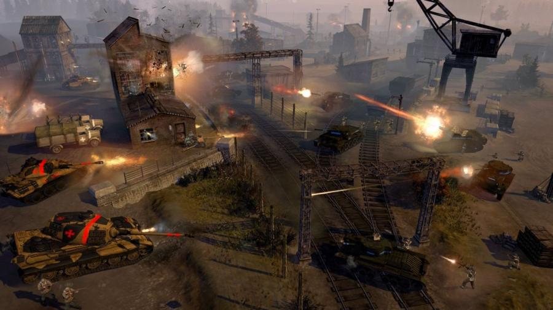

Company of Heroes, también llamado CoH, es un videojuego de estrategia en tiempo real. Situado en la Segunda Guerra Mundial, el juego cubre el enfrentamiento entre las tropas alemanas y estadounidenses desde el Día D hasta el final de la guerra. Por su innovador estilo de juego, uso de tácticas esenciales para obtener la victoria e impresionantes gráficos es considerado uno de los mejores juegos de ETR (Estrategia en Tiempo Real) de la historia. Su sistema multijugador influye fuertemente en el juego y asegura muchas más horas de juego, tanto es así, que varios años después Company of Heroes sigue teniendo una buena cantidad de jugadores en línea cada día.
El juego dispone de unidades de tierra, aire y artillería exterior (aunque las de aire no son controladas directamente por el jugador), dispone de mucha diversidad de unidades que van desde carros de combate, armamento pesado, cañones antitanque, artillería autopropulsada, artillería a pie, morteros, semiorugas, vehículos de recuperación y de apoyo, paracaidistas, comandos, y un largo etcétera. Ha sido desarrollado para Microsoft Windows por Relic Entertainment y fue lanzado el 14 de septiembre de 2006 en tiendas, y el 17 de julio de 2007 en la plataforma Steam. El 13 de febrero de 2020 se lanzó una versión del juego para dispositivos iPad, desarrollada por Feral Interactive.
El método de juego es muy similar al anterior juego de Relic, Warhammer 40.000: Dawn of War. Mediante conquista de puntos esparcidos por el mapa, que el jugador deberá tomar y defender ya que le proporcionan los tres recursos básicos: Mano de obra, Combustible y Munición.
El 7 de mayo de 2012 fue anunciado Company of Heroes 2 por parte de THQ. La segunda entrega estará ambientada en el frente oriental poniendo al jugador al mando del ejército rojo contra las tropas invasoras nazis. El juego hará uso de la versión 3.0 del motor Essence.
HISTORIA
Company of Heroes: Tales of Valor, para los que aún no conozcáis la saga, pertenece a Company of Heroes, una serie de juegos de estrategia en tiempo real que te pone al mando de los ejércitos más poderosos del mundo. El juego original, al que luego han seguido un buen número de secuelas, te lleva hasta la II Guerra Mundial. En concreto, al enfrentamiento de las tropas nazis alemanas contras la estadounidenses.
La acción arranca el famoso Día D, el Desembarco de Normandía, y se prolonga hasta que los nazis son derrotados. O bueno, según vaya el juego, hasta que uno de los dos bandos pierda. La historia, en este caso, no tiene que repetirse.
El éxito de esta apuesta de Relic Entertainment llegó por su original y realista estilo de juego. Para empezar, las tácticas y estrategias de combate son claves para ganar la más mínima batalla. Si a este hecho le sumamos unos gráficos adelantados a su tiempo, ya tenemos los mimbres de un juegazo. El remate vino de la mano del ETR, es decir, la Estrategia en Tiempo Real.
Cómo sería la cosa que en el juego se puede elegir entre unidad de tierra, aire o artillería exterior. Aunque las de aire las controla el ordenador. Obviamente, el potencial armamentístico de la época está recogido por completo en Company of Heroes. Desde carros de combate, a morteros, pasando por semiorugas, paracaidistas o comandos. Entre otros muchos.
Además, al tener la opción multijugador desde un principio, hizo que el juego online disparara su número de aficionados. Bueno, y que el tiempo dedicado se disparara por varias horas al día. Así, una década después de su lanzamiento, Company of Heroes sigue juntando a millones de personas de todo el mundo frente a la pantalla.
Cabe reseñar que Relic Entertainment hizo algo de trampa. Su forma de plantear el juego es muy similar a su anterior desarrollo: Warhammer 40.000: Dawn of War. Es decir, el jugador debe ir conquistando diversos puntos en el mapa interactivo del que dispone. Una vez sean suyos, tendrá que defenderlos de agresiones exteriores. Y es que tener un punto controlado, supone mano de obra, munición y combustible a los jugadores. Imprescindible a todos los niveles.
Y sí, para los que se cansaron de jugar siempre con Estados Unidos, la empresa les dio una alegría seis años después. Fue en mayo de 2012 cuando llegó Company of Heroes 2, que ponía a los jugadores al frente del ejército rojo. Eso sí, de nuevo ante el poderío militar y armamentísico de la Alemania nazi y un Hitler en el punto más alto de su conquista
Como pack de expansión para Company of Heroes, Tales of Valor incluye nuevas unidades, mapas adicionales y más modos multijugador. El más reconocible, Stonewall, donde el jugador maneja un pequeño número de tropas contra las oleadas de enemigos que se incrementan cada vez más. Este modo tiene una característica llamada Fuego directo, donde el jugador Apunta y dispara (visto en Soldiers: Heroes of WWII, Faces of War y Men of War).
LISTA DE MISIONES
Batalla de Normandía
PLAYA DE OMAHA El 6 de junio de 1944, día D. las órdenes de la compañía Able son despejar Dog White y neutralizar los puntos de apoyo alemanes.
VIERVILLE El 6 de junio de 1944, los paracaidistas de la compañía Fox deben asegurar una carretera de enlace clave entre la playa de Omaha y el pueblo de Vierville antes del desembarco.
CARENTAN Situado en una encrucijada entre las playas de Utah y Omaha, Carentan es un objetivo crucial para establecer una decisiva cabeza de playa aliada en Normandía. Las órdenes de la compañía Fox son asegurar Carentan y hacer retroceder a los defensores del eje.
CONTRAATAQUE EN CARENTAN Después de asegurar Carentan, la compañía Fox debe afrontar un contraataque decidido de los alemanes. Poco antes del atardecer, la parte adelantada de la 17. Las Div. Panzergrenadier de las SS lanzan una ofensiva para recuperar Carentan.
MONTEBOURG 4 días después de Carentan, las compañías Able y Dog deben encargarse de despejar la ruta a Cherboug y defender y convoy de tropas y suministros necesarios para poder llegar a Cherburgo.
CHERBURGO A la compañía Able se le encomienda liderar el asalto final y mantener intacto el puerto de Cherburgo. Los cañones del USS Texas le apoyan.
SOTTEVAST La inteligencia aliada ha descubierto una fábrica de producción de cohetes V2. Para acabar con la amenaza, la compañía Fox recibe órdenes de asaltar la instalación. La misión es neutralizar la guarnición de V2 de lugar y destruir los cohetes.
SAINT-FROMOND La compañía Able se ha desplegado en el sector de Saint-Lô, también conocido como la región de los setos. La primera misión es asegurar la ciudad de Sanit-Formond y establecer una cabeza de puente atravesando el río Vire.
COLINA 192 Entre la compañía Able y la colina 192 hay un laberinto de setos plagados con cañones del 88, Panzers e infantería oculta. Las órdenes de la Able son asegurar la colina 192 antes de avanzar hacia Saint-lô.
SAINT-LÔ La misión de la compañía Able es eliminar a todos los defensores del Eje del propio Saint-lô. Los alemanes han convertido Saint-lô en una ciudad fortificada y la defenderán con uñas y dientes.
HÉBÉCREVON En la ofensiva, la compañía Able recibe órdenes de dar caza y destruir los Panther restantes de la División Panzer Lehr.
MONTAIN La compañía Able ha sido retirada del frente y tiene órdenes de relevar a la compañía Dog en Montain. Las órdenes de la Able son atrincherarse y esperar suministros.
CONTRAATAQUE DE MONTAIN Tras sobrevivir a la noche y mantener a raya el ataque inicial de la división Panzer, la compañía Able se prepara para un fuerte contraataque en la colina 317.
AUTRY El 7.° ejército alemán ha comenzado a retirarse de Normandía. Dada la escasez de rutas de escape, los Panzer y Tiger deben mantenerlas abiertas todo el tiempo posible. El capitán Schultz y lo que queda de su Tigergroupen de elite defienden una de esas rutas.
CHAMBOIS El 19 de agosto, los aliados tienen casi rodeado al 7. ° Ejército alemán. Con las divisiones polacas y canadienses aproximándose desde el norte, la compañía Able puede ayudar a estrechar el lazo alrededor de las divisiones del Eje de Chambois.

Entregas principales de Company of heros
company of heros
company of heros tales of valor
company of heros II
company of heros II expancion
company of heros III (2012)